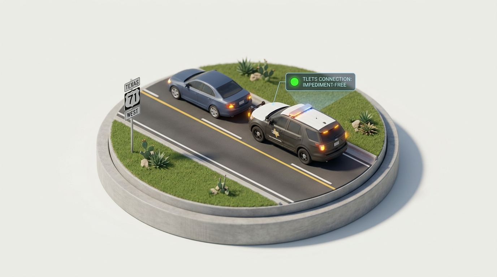

Crash Scene Responsibilities & Good Samaritan Law
Texas Transportation Code codifies affirmative legal duties immediately following a collision, while Texas Civil Practice and Remedies Code shields good-faith emergency aid.
Operators involved in a collision resulting only in vehicle damage must stop immediately without obstructing traffic more than necessary, remain at the scene, render reasonable aid to any injured person, and exchange vehicle registration credentials, address, and liability insurer details.

The Crash Scene Action Plan
If a collision occurs on the main lanes, ramp, shoulder, or median of a freeway and each vehicle can be safely driven, operators must immediately move the vehicle to a designated accident investigation site, frontage road, or the nearest safe shoulder.
- Turn off ignition and engage hazard hazard lights immediately.
- Inspect yourself and passengers for trauma before exiting.
- Deploy flares or reflective triangles 100-200 feet behind the vehicle.
Do NOT attempt to lift or move injured occupants unless there is immediate, life-threatening danger such as fire, explosion, or submersion. Improper handling risks paralysis.
Good Samaritan Law (CPRC § 74.151)
A person who in good faith administers emergency care at the scene of an emergency or in a hospital is not liable in civil damages for an act performed during the emergency unless the act is willfully or wantonly negligent.
You or your vehicle actions directly caused or contributed to the emergency scene.
You render roadside medical or mechanical aid expecting monetary compensation or billing.
Guilty of reckless indifference, willful and wanton disregard, or intentional bodily harm.
Always immediately dial 9-1-1 before performing interventions. Keep injured victims warm, dry, and calm. Never move a victim with potential spinal or neck trauma unless imminent danger of vehicle fire or catastrophic explosion directly threatens survival.
TDLR Statutory Checkpoint // Topic 02 Knowledge Gate
When a collision occurs on a controlled-access freeway and both vehicles can be safely driven, what does Texas law strictly mandate?
Under what circumstance does Texas Good Samaritan protection NOT shield an individual providing roadside assistance?